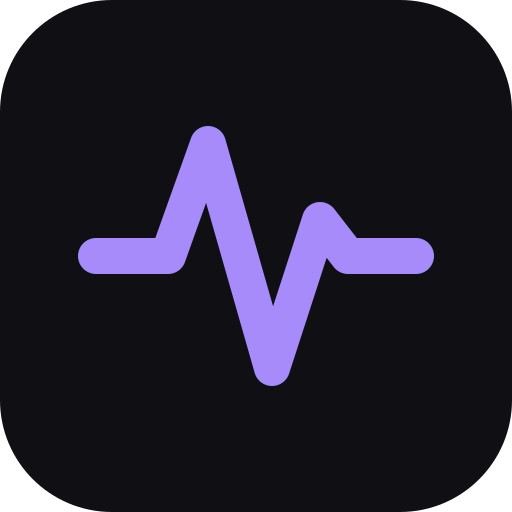

<!doctype html><html lang="en"><head><meta charset="utf-8"><meta name="viewport" content="width=device-width,initial-scale=1,viewport-fit=cover"><title>PULSE</title><meta name="theme-color" content="#101014"><link rel="icon" href="logo.svg"><link rel="manifest" href="manifest.json"><link rel="apple-touch-icon" href="icon-192.png"><link rel="stylesheet" href="style.css"></head><body>
<div id="app"><aside id="side"><div class="logo">PULSE</div><nav id="nav"></nav><div class="plh"><span>Playlists</span><button id="newpl" data-a="newpl" aria-label="Create playlist">＋</button></div><nav id="pls"></nav></aside><main id="main" tabindex="-1"></main></div>
<footer id="player"><div class="np"><div class="cov" id="cv">♪</div><div class="m"><b id="tt">Nothing playing</b><span id="ta">Import music to start</span></div><button id="lk" aria-label="Like">♥</button></div>
<div class="ctl"><div class="btns"><button id="sh" aria-label="Shuffle">⇄</button><button id="pv" aria-label="Previous">⏮</button><button id="pp" class="big" aria-label="Play/Pause">▶</button><button id="nx" aria-label="Next">⏭</button><button id="rp" aria-label="Repeat">↻</button></div><div class="seek"><span id="cu">0:00</span><input id="sk" type="range" min="0" max="1000" value="0" aria-label="Seek"><span id="du">0:00</span></div></div>
<div class="vol"><button id="mu" aria-label="Mute">🔊</button><input id="vl" type="range" min="0" max="1" step="0.01" value="0.8" aria-label="Volume"></div></footer>
<input id="fb" type="file" accept="application/json,.json" hidden><audio id="a" preload="metadata"></audio><input id="fi" type="file" accept="audio/*,.flac,.m4a,.aac" multiple hidden><input id="fd" type="file" webkitdirectory multiple hidden>
<script src="core.js"></script><script src="meta.js"></script><script src="app.js"></script><script>if('serviceWorker'in navigator)addEventListener('load',()=>navigator.serviceWorker.register('service-worker.js').catch(()=>{}))</script></body></html>
